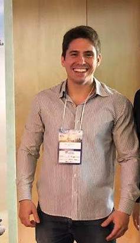

Short Bibliography

I am 23 years old, was born in Fortaleza/CE and have been living here since then.
I am finishing a graduation in Civil Engineering at UFC, but the experiences and reflexions passed through the Covid-19 pandemic triggered my filling about what I was doing and I decided to persue my real dream of working with software development. I found at Trybe an oportunity to speed up my career at web development and I am looking forward into this.
Skills
Hardskills
- HTML
- CSS
- JavaScript
Softskills
- Emotional Intelligence
- Commitment
- Resilience
- Critical Thinking